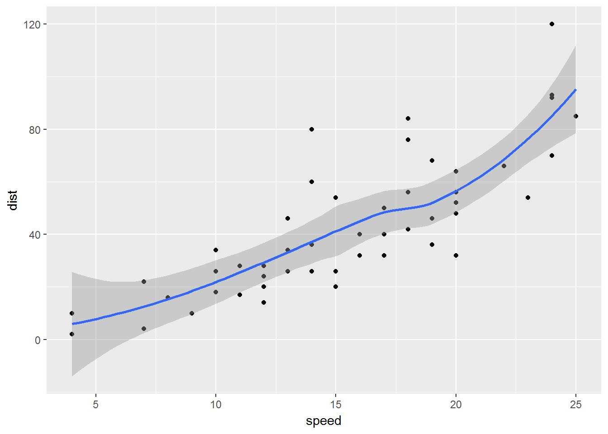

I was playing around with extracting data from ggplot graphs, which I have done previously using ggplot2_build(). This time it was getting some of the modelling results that are plotted using geom_smooth(). Take the quick example below.
library(ggplot2)
p = ggplot(cars, aes(x = speed, y = dist)) +
geom_point() +
geom_smooth(method = "loess")
p
The plot has two layers and so ggplot_build(p)$data will return a list of two data frames. If we are interested in the results from geom_smooth() we need the second one as geom_smooth() is the second layer.
head(ggplot_build(p)$data[[2]], n = 10) x y ymin ymax se flipped_aes PANEL group
1 4.000000 5.893628 -14.0214308 25.80869 9.885466 FALSE 1 -1
2 4.265823 6.369796 -12.1702114 24.90980 9.202917 FALSE 1 -1
3 4.531646 6.867702 -10.3935937 24.12900 8.568188 FALSE 1 -1
4 4.797468 7.387181 -8.6930267 23.46739 7.981917 FALSE 1 -1
5 5.063291 7.928070 -7.0698299 22.92597 7.444680 FALSE 1 -1
6 5.329114 8.490205 -5.5250240 22.50543 6.956900 FALSE 1 -1
7 5.594937 9.073423 -4.0591073 22.20595 6.518745 FALSE 1 -1
8 5.860759 9.677561 -2.6717841 22.02691 6.129986 FALSE 1 -1
9 6.126582 10.302454 -1.3616644 21.96657 5.789853 FALSE 1 -1
10 6.392405 10.947940 -0.1259761 22.02186 5.496887 FALSE 1 -1
colour fill size linetype weight alpha
1 #3366FF grey60 1 1 1 0.4
2 #3366FF grey60 1 1 1 0.4
3 #3366FF grey60 1 1 1 0.4
4 #3366FF grey60 1 1 1 0.4
5 #3366FF grey60 1 1 1 0.4
6 #3366FF grey60 1 1 1 0.4
7 #3366FF grey60 1 1 1 0.4
8 #3366FF grey60 1 1 1 0.4
9 #3366FF grey60 1 1 1 0.4
10 #3366FF grey60 1 1 1 0.4The y values are the results from the loess model. So far, so good but I wanted to check if these values were the same as the results from direct calculation. Using base R functions give us the following by default.
loess_results = predict(loess(dist~speed,cars), cars$speed)
head(loess_results)[1] 5.893628 5.893628 12.499786 12.499786 15.281082 18.446568These results don’t match but a quick look at the documentation shows that geom_smooth() defaults to using n = 80 points and these are in equal steps from the minimum to the maximum values of speed. Providing the same sequence of speed values
# recalculate the values
loess_results = predict(loess(dist~speed,cars),
seq(min(cars$speed), max(cars$speed), length.out = 80))produces the same results as geom_smooth(), so we don’t need to do both. We can double check just to be sure.
# are they the same as those from ggplot?
identical(loess_results, ggplot_build(p)$data[[2]]$y)[1] TRUE